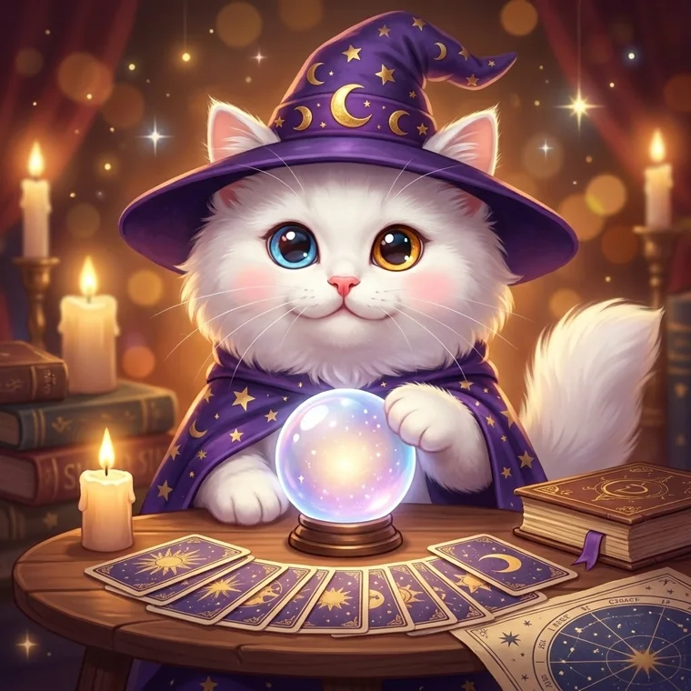
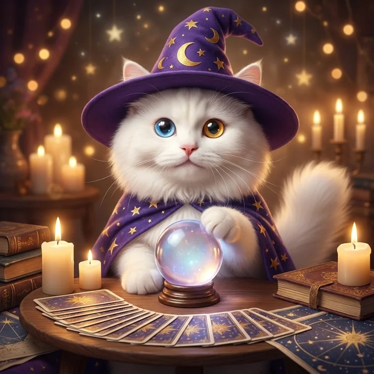

🔮🐱 고양이 점술사 — 복장·아이템 시안
A2 고양이를 레퍼런스로 더 귀엽게(눈 크게·볼 통통) + 점술사 모자/터번·망토 + 수정구·타로·촛불·주문서.
기준:
A2 (흰 털 · 파란 눈 + 호박색 눈 오드아이). 이 얼굴을 유지한 채 복장만 입혔습니다.
🎩 마법사 모자 + 별망토 (수정구·타로·촛불)

모자 1
동화풍 · 볼터치 · 제일 아기자기

모자 2
실사풍 · 카드 부채꼴 · 정면 균형 👍
모자 3
실사풍 · 별자리 배경 · 통통한 볼
👳 터번 + 페이즐리 숄 (수정구·랜턴·향)
터번 1
앞발로 수정구 감싼 자세 · 달밤
터번 2
정면 · 향 연기 · 보석 터번 👍
터번 3
숄 넉넉 · 랜턴 양옆 · 아늑함
 기준: A2 (흰 털 · 파란 눈 + 호박색 눈 오드아이). 이 얼굴을 유지한 채 복장만 입혔습니다.
기준: A2 (흰 털 · 파란 눈 + 호박색 눈 오드아이). 이 얼굴을 유지한 채 복장만 입혔습니다.
기준: A2 (흰 털 · 파란 눈 + 호박색 눈 오드아이). 이 얼굴을 유지한 채 복장만 입혔습니다.
기준: A2 (흰 털 · 파란 눈 + 호박색 눈 오드아이). 이 얼굴을 유지한 채 복장만 입혔습니다.